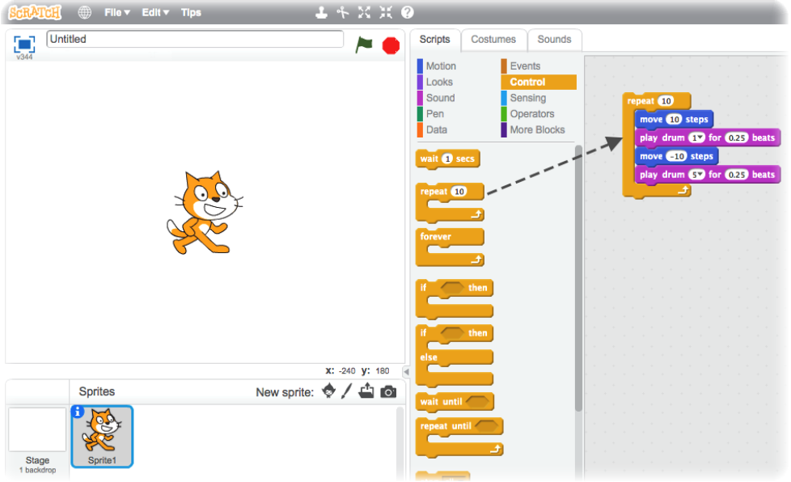

Try saying the title of this chapter three times really fast. ; )
When I was kid, we didn't have a World Wide Web full of code we could just copy-and-paste into our local environments. We had printed magazines that we had to buy, with physical money, and they had lines and lines of BASIC code in them that we had to transcribe into our computer by hand. Here's a small portion of the code from a game called "Dragon Quest" for the Commodore 64 that was featured in Run magazine (Meixner, 1984).
Dragon Quest Code Sample and Screenshot of Final Product
This was pure busywork, and it put up a huge barrier of time and patience that only the most socially-awkward could overcome to learn programming. Today, technology puts the barriers much much lower so that anyone who wants to learn programming can do so without completely giving up their social contacts, exercise regimen, or personal hygiene like I did in middle school. I am so incredibly fantastically excited for kids today that they don't have to go through this same arduous process.
Collected here ...
Colors, animations, and sounds are important. This is the one element I see most lacking in educational apps from programmers. I don't care how tacky, put some color on the screen. It just takes one line of CSS: body {background-color: purple;} BOOM! Purple background added to your app. Need some sound? Go grab some Creative Commons MP3s and play them at various points in your program or use Google Chrome's (slightly buggy) speechSynthesis to read text aloud. Need some flashing light? Hit StackOverflow for an easy animation script to cycle through a bunch of colors at 100 milisecond intervals.
Then, most importantly, reuse all of these cool effects in everything else you write.
Different things will grok with different kids. My two-year-old took to an alphabet-typing race game with incredible enthusiasm. So much so that, when my four-year-old saw his younger brother having fun with it and wanted to try it himself, he got frustrated with how quickly the two-year-old was finding and hitting keys before he could locate them. ...
My kids were navigating keyboards at the age of two. ... Will you allow holding keys down?
Using the mouse is hard for young children, but tablets are fairly easy. Make sure your app has big buttons they can click with their fingers.
Dragging and dropping is hard for young children.
I keep a bit of deep wisdom on my desk from a fortune cookie that reads, "Nine tenths of education is encouragement." Games are not babysitters; they are an opportunity for quality time with your kids. No matter how much the simplicity of this play bores you out of your mind (Full disclosure: it bores me out of my mind too ("Oh yay. You clicked the button to make the buzzing sound again. How amusing. Let me check my phone while you do it again.").).
- Study by filament games about the importance of teacher interaction.You will find by watching children play with your app that they will often not get it. That oh-so clever app you wrote to teach greater-than and less-than? It's just a bunch of nonsense on the screen that makes nifty lights and sounds. Worse, there is often no way to make the app intuitive enough to teach the concept on its own. At this point, you must intervene and guide the child to understand what they are seeing.
Playtest. Playtest! PLAYTEST!!! Pay attention to how children interact with your apps. I guarantee you that kids are going to engage with your app in ways you did not anticipate. They are like a thousand monkeys banging on a thousand typewriters for a thousand years squeezed into every minute of gameplay. If there is a set of steps that will break your app, they will find it.
Be Aware: This URL is case-sensitive. That means you must capitalize the "E's" in "Explorable-Explanations."
http://ideonexus.github.io/Explorable-Explanations/
- Scratch - Using hotdogs to calculate Pi. https://codecombat.com/ Scratch
MinecraftMeixner, Tom (1984). Dragon Quest. Run Magazine, Issue 05, May 1984. Retrieved from: https://archive.org/details/run-magazine-05